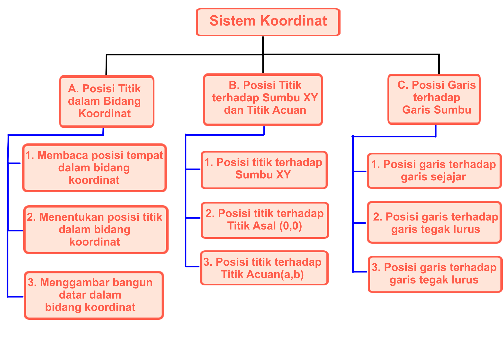

3.2 Menjelaskan kedudukan titik dalam bidang koordinat Kartesius yang dihubungkan dengan masalah kontekstual
4.2 Menyelesaikan masalah yang berkaitan dengan kedudukan titik dalam bidang koordinat Kartesius
3.2.1 Menentukan posisi tempat pada bidang koordinat.
3.2.2 Menentukan posisi titik pada bidang koordinat dengan 4 bagian kuadran.
3.2.3 Menentukan bangun datar yang dibentuk dari titik koordinat.
3.2.4 Menentukan posisi titik terhadap garis sumbu-x dan sumbu-y pada bidang koordinat.
3.2.5 Menentukan posisi titik terhadap titik asal(0,0) pada bidang koordinat.
3.2.6 Menentukan posisi titik terhadap titik acuan(a,b) pada bidang koordinat.
3.2.7 Menentukan kedudukan garis sejajar terhadap garis sumbu pada bidang koordinat.
3.2.8 Menentukan kedudukan garis tegak lurus terhadap garis sumbu pada bidang koordinat.
3.2.9 Menentukan kedudukan garis berpotongan terhadap garis sumbu pada bidang koordinat.
4.2.1 Menyelesaikan masalah yang berkaitan dengan koordinat kartesius.
Peta Konsep
